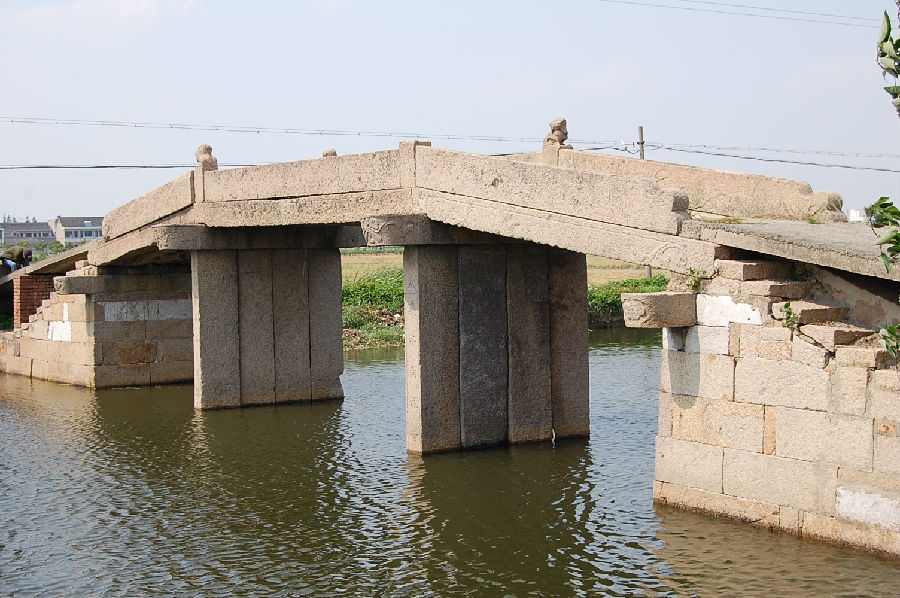

嘉兴市文物保护网 · 市级文物保护点 · 2020-11-03 · 原文

陈家坝村陶家桥位于嘉兴市秀洲区油车港镇陈家坝村村委南侧。根据形制判断该桥为清代所建。南北横跨陶家桥港，系三孔有栏梁式石板桥，全长21.57米，宽2.1米桥面和桥柱均由4块石板组成，桥栏有狮子形望柱4根，南北落坡各设石阶10级，两侧桥额刻有“重建陶家桥”，东西桥联分别为：“桥有□建福庇临，秀水藏驚同欢歌”和“藏水南流紫秀水，福禄长临美有鱼”。桥身刻有花纹。陶家桥形制完整，狮子望柱雕刻栩栩如生，做工考究，有较高的历史和艺术价值。2009年公布为嘉兴市文物保护点。